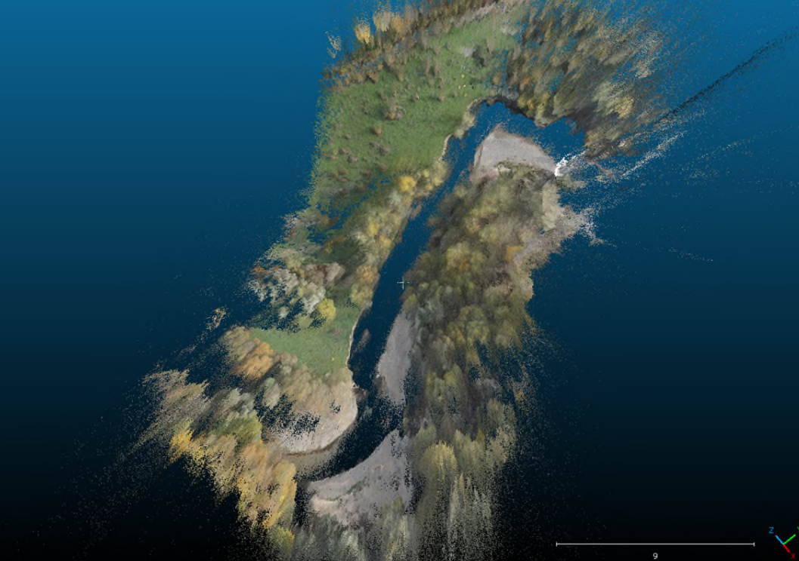
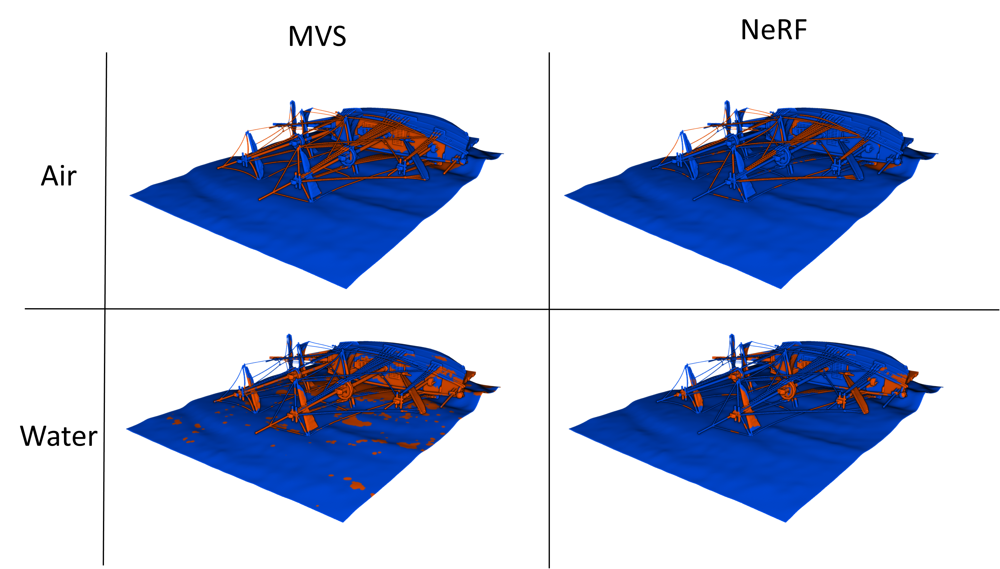

3D Underwater Mapping Workshop at TU Wien
We presented three contributions to the 3D Underwater Mapping from Above and Below workshop at TU Wien. Please find the abstracts below:
Exploring the Potential of Refractive NeRFs for Photogrammetric Bathymetry - First Application to UAV-based Data from the Pielach River

Günthner, A., Brezovsky, M., Schulte, F., Winiwarter, L., Mandlburger, G., and Jutzi, B.: Exploring the Potential of Refractive NeRFs for Photogrammetric Bathymetry - First Application to UAV-based Data from the Pielach River, Int. Arch. Photogramm. Remote Sens. Spatial Inf. Sci., XLVIII-2/W10-2025, 107–114, https://doi.org/10.5194/isprs-archives-XLVIII-2-W10-2025-107-2025, 2025.
Analysis of refraction-aware neural radiance fields for 3D reconstruction of underwater scenes

Brezovsky, M., Günthner, A., Schulte, F., Winiwarter, L., Jutzi, B., and Mandlburger, G.: Analysis of refraction aware Neural Radiance Fields for 3D reconstruction of through the water scenes, Int. Arch. Photogramm. Remote Sens. Spatial Inf. Sci., XLVIII-2/W10-2025, 39–45, https://doi.org/10.5194/isprs-archives-XLVIII-2-W10-2025-39-2025, 2025.
Simulation and validation of underwater scenes for two-media optical 3D reconstruction

Schulte, F., Brezovsky, M., Günthner, A., Jutzi, B., Mandlburger, G., and Winiwarter, L.: Simulation and validation of underwater scenes for two-media optical 3D reconstruction, Int. Arch. Photogramm. Remote Sens. Spatial Inf. Sci., XLVIII-2/W10-2025, 271–278, https://doi.org/10.5194/isprs-archives-XLVIII-2-W10-2025-271-2025, 2025.